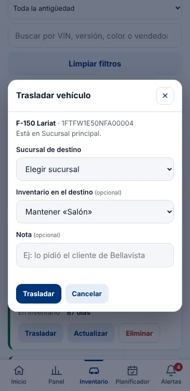
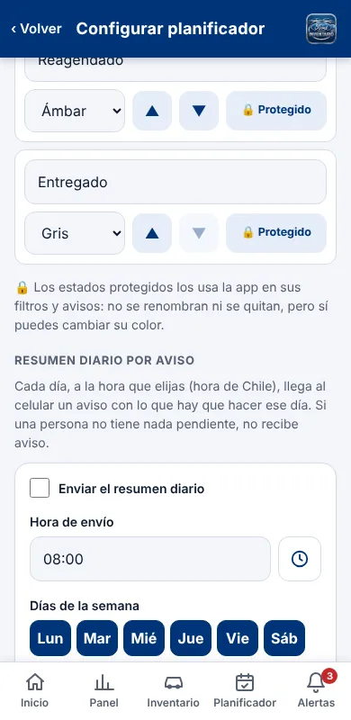

Todo el stock y todas las entregas, en un solo lugar.
Controla el inventario de cada sucursal, programa y prepara las entregas, y avisa al celular de cada persona justo cuando le toca actuar. Sin planillas, sin llamadas de ida y vuelta.


Controla el inventario de cada sucursal, programa y prepara las entregas, y avisa al celular de cada persona justo cuando le toca actuar. Sin planillas, sin llamadas de ida y vuelta.
Pensado para el trabajo diario del salón, el patio y el taller de preparación.
Diseñada primero para el celular, también cómoda en el computador. Modo claro y oscuro.





Los permisos se aplican en la base de datos, no solo en la pantalla.
| Función | Admin | Jefe | Preparador | Vendedor | Consulta |
|---|---|---|---|---|---|
| Ver inventario | Todas | Todas | Su sucursal | Todas (lectura) | Su sucursal |
| Ingresar / dar salida | Sí | Sí | Su sucursal | No | No |
| Trasladar entre sucursales | Sí | Sí | Su sucursal | No | No |
| Programar entregas | Sí | Sí | No | Sí (las suyas) | No |
| Preparar (estado y grabado) | Sí | Sí | Sí | No | No |
| Mis tareas | — | — | Sí | — | — |
| Panel de resumen | Sí | Sí | No | No | No |
| Cuentas, sucursales y listas | Sí | Sí | No | No | No |
| Configurar resumen y antigüedad | Sí | Sí | No | No | No |
| Recibir avisos | Sí | Sí | Sí | Sí | No |
| Exportar a Excel / CSV | Sí | Sí | Sí | Sí | Sí |
Tecnología simple y estándar, fácil de mantener y de alojar.
Entra, mira los manuales por perfil o revisa cómo funciona cada pantalla.